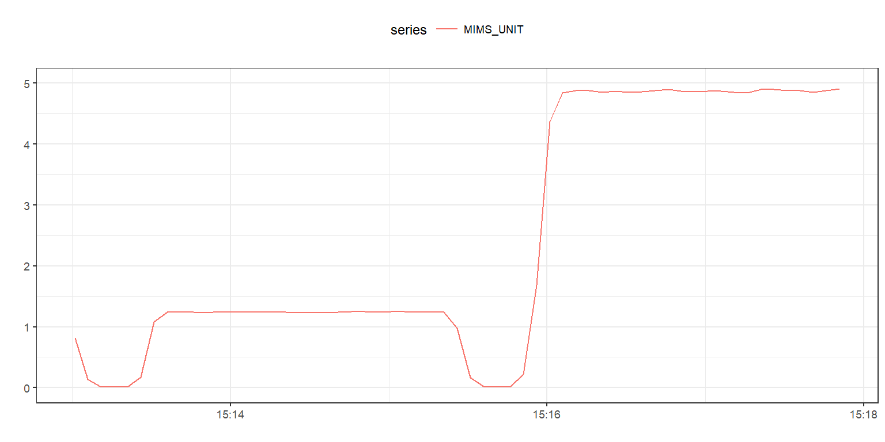

Quick start to use MIMSunit
Qu Tang
November 21, 2017
Make sure you prepare your raw accelerometer data in following csv format
HEADER_TIME_STAMP,X,Y,Z
2016-10-03 14:51:14.236,0.007,-0.005,0.984
2016-10-03 14:51:14.256,0.008,-0.007,0.981
2016-10-03 14:51:14.276,0.009,-0.006,0.978
2016-10-03 14:51:14.297,0.009,-0.007,0.984
2016-10-03 14:51:14.317,0.010,-0.010,0.982
2016-10-03 14:51:14.337,0.011,-0.010,0.982
Load into memory using mHealthR package
df = mHealthR::mhealth.read(file_path, filetype='sensor')| HEADER_TIME_STAMP | X | Y | Z |
|---|---|---|---|
| 2016-10-03 15:13:00.897 | 0.000 | -0.015 | 0.978 |
| 2016-10-03 15:13:00.907 | 0.006 | -0.019 | 0.977 |
| 2016-10-03 15:13:00.917 | 0.004 | -0.018 | 0.968 |
| 2016-10-03 15:13:00.927 | 0.002 | -0.015 | 0.965 |
| 2016-10-03 15:13:00.937 | 0.002 | -0.014 | 0.982 |

Run MIMS-unit algorithm on input data
mims = MIMSunit::mims_unit(df, breaks = '1 min', range = c(-2, 2))| HEADER_TIME_STAMP | MIMS_UNIT |
|---|---|
| 2016-10-03 15:13:00.897 | 0.8210768 |
| 2016-10-03 15:13:05.907 | 0.1393090 |
| 2016-10-03 15:13:10.907 | 0.0171817 |
| 2016-10-03 15:13:15.907 | 0.0093431 |
| 2016-10-03 15:13:20.907 | 0.0098903 |
